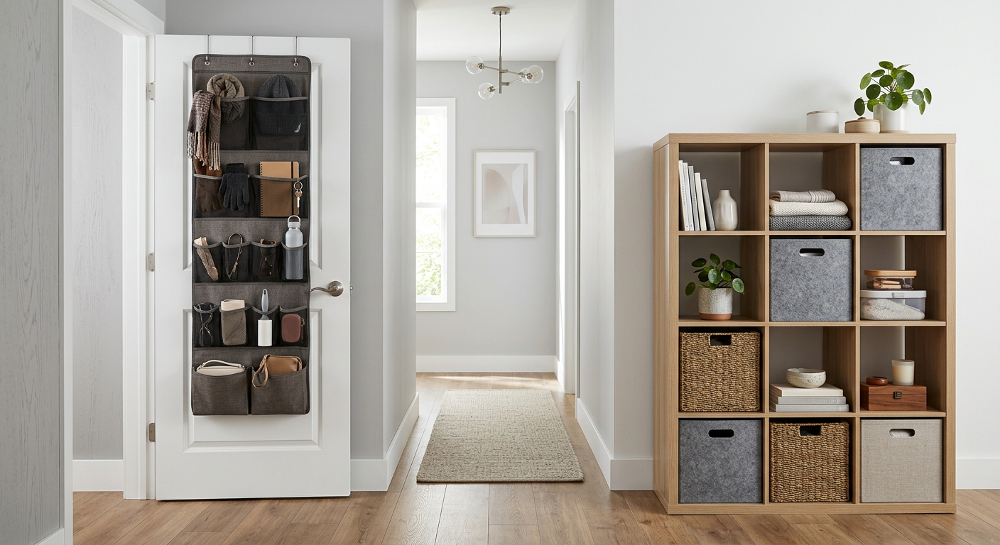
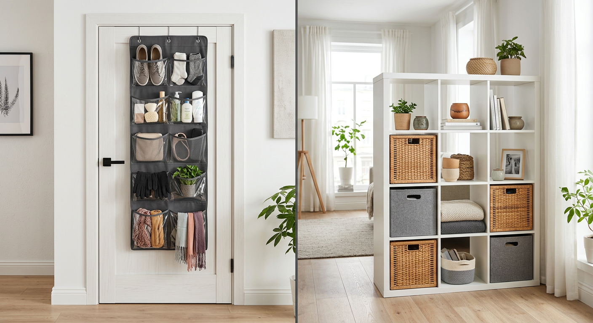

Over-Door Organizers vs Cube Shelves
Disclosure: As an Amazon Associate, we may earn from qualifying purchases.
| Factor | Over-Door (Example: Simple Houseware) | Cube Shelves (Example: SONGMICS) |
|---|---|---|
| Best for | Renters, tight spaces, instant setup | Flexible long-term storage systems |
| Setup effort | Low | Medium |
| Space use | Excellent vertical use | Good if floor/wall room exists |
| Aesthetic impact | Utility-first | Can look cleaner if styled |
| Typical value | High for speed + price | High for flexibility |
Real product examples
- Over-Door Pick: Simple Houseware 24 Pockets Over the Door Hanging Shoe Organizer — Check on Amazon
- Cube Pick: SONGMICS Cube Storage Organizer — Check on Amazon
If you’re mainly solving closet overflow quickly, start over-door. If you want a multi-room system, start with cube storage.


FAQ
How do you choose these picks?
We prioritize use-case fit, organization impact, and practical setup tradeoffs.
Do prices stay the same?
Amazon prices and availability change often; verify on Amazon before buying.
Which is better for tiny bedrooms?
Over-door usually wins for tiny rooms because it uses vertical space without consuming floor area.
Which option looks cleaner long term?
Cube systems can look cleaner if styled and maintained, especially in visible living areas.
Can I use both together?
Yes. Many people use over-door for overflow and cubes for stable category storage.